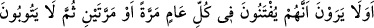
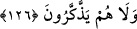

eder. Kim de ona inanmaz, onunla amel etmez ya da şânına ta’zim etmezse Allah onu
hem dünyada hem de âhirette yardımsız bırakıp hor ve hakir kılar.
126. Kendilerinin her yıl bir veya iki defa sınandıklarını görmüyorlar mı? Yine de
tevbe etmiyor, öğüt almıyorlar.
“Kendilerinin her yıl bir veya iki defa sınandıklarını görmüyorlar mı?” Yani
münâfıklar, kendilerinin her yıl bir veya iki defa sınandıklarına bakmazlar ve görmezler.
Âyetteki soru onların bu hareketini doğru bulmama ve onları azarlama mânâsı ifade
etmektedir.
“Bir veya iki defa” ifadesi ile onların imtihana tâbi tutulmalarının âyette yazılı olan
sayı kadar vâki olduğu mânâsı değil çokluk kastedilmektedir. Yani onlar her yıl hastalık,
şiddet gibi kişiye günahlarını ve Yüce Rabb’inin huzurunda (hesap vermek üzere)
duracağını hatırlatıp Allah Teâlâ’ya imana götüren çeşitli belalarla sınandıklarını
görmüyorlar mı?
“Yine de tevbe etmiyor, öğüt almıyorlar.” Önceki cümledeki sorunun ifade ettiği
inkar ve azarlama kapsamına bu cümle de dahildir. Yâni onlar iman etmelerini
gerektiren her yıl çeşitli defalar sınandıklarını, sonra da içinde bulundukları nifaktan
tevbe etmediklerini, ibret almayı ve tevbe etmeyi gerektiren bu imtihanlardan hiç öğüt
almadıklarını görmüyorlar mı?
et-Te’vîlâtü’n-Necmiyye’de denir ki: Âyette ifade edilen imtihan, diri olan kalbin
uyanmasını gerektirir. Münâfıkların kalpleri ölüdür. Ölü kalp ise Allah’a tevbe edip
dönmez. Böyle kalbe nasihat edenlerin nasihati tesir etmez. Nitekim Allah Teâlâ: “Sen
ölülere duyuramazsın.” (en-Neml, 27/80) ve “(Bu Kur’ân Muhammed’e verildi) ki,
diri olanları uyarsın.” (Yâsîn, 36/70) buyurmuştur.
Mesnevî’de şöyle denilir:
Aybını söylemiyorsan, bari sus
Gösterişte, hile ile kendini öldürme
Doğruluktan bir para bulduysan, ağzını açma
Çünkü Hak yolunda sınama taşları vardır
Allah: “İnsan doğumdan bu ana dek
Her sene iki imtihan olur” buyurur
Ey oğul! İmtihan içinde imtihan vardır
Aklını topla da küçük bir imtihanla kendini satın alma
Deniz, balıkları dışarı atmaz